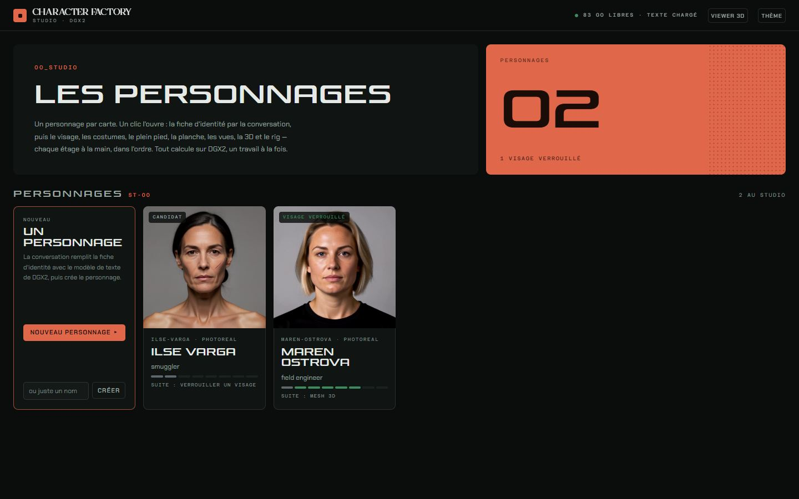
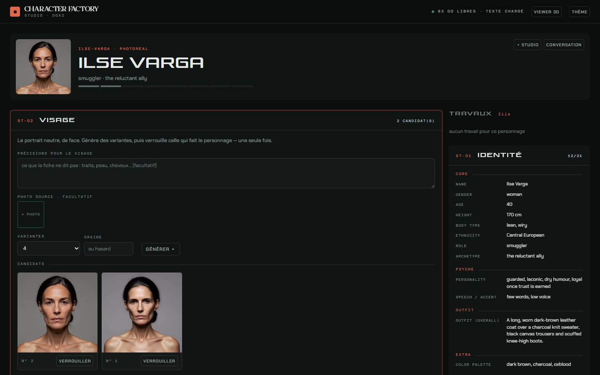
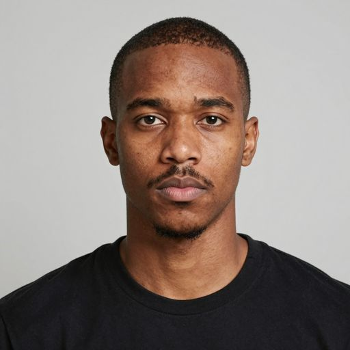
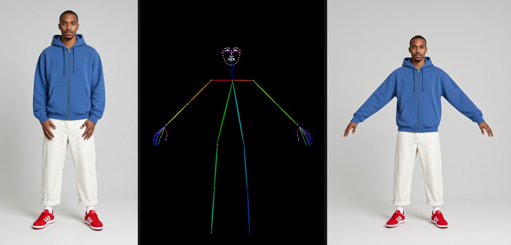
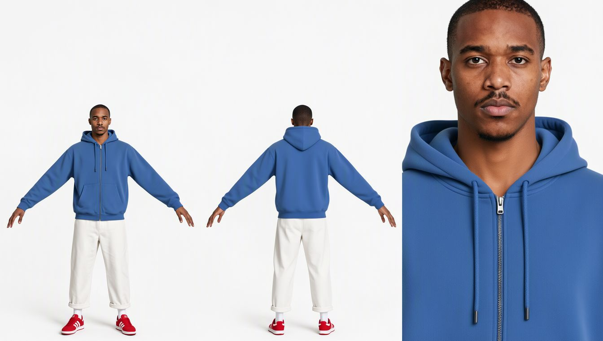
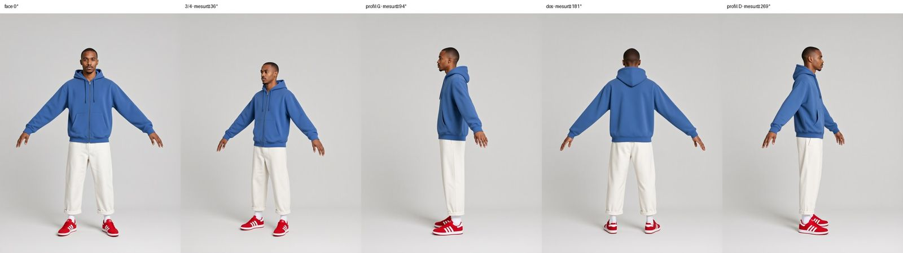
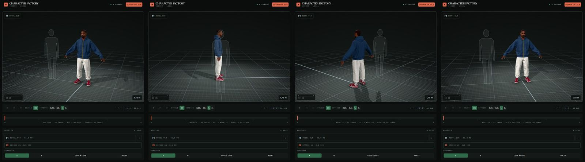
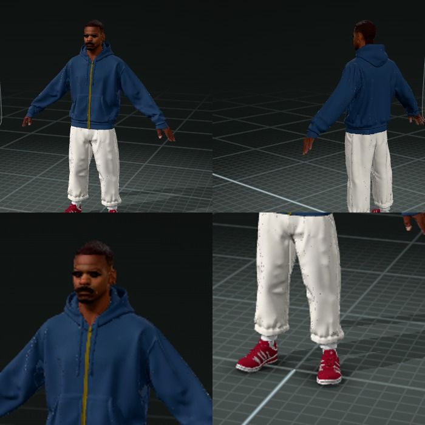

Où en est la chaîne
Visage verrouillé, plein pied en pose naturelle, A-pose imposée par un squelette, planche de référence, vues mesurées, mesh PBR. Tout tourne sur DGX2 et se mène dans le studio. Les images qu'on valide sortent de Qwen-Image 2.1 turbo ; H3 ne servira plus qu'au turnaround de présentation, à la fin. Les images plus bas sont celles d'Essai atelier, le personnage de Cal, rendues depuis le studio.
Les étages
tourne · câblé · attendLe studio
DGX2 · port 8765Une application, plus une suite de commandes. L'accueil montre les personnages en cartes ; un clic ouvre le personnage, une étape à la fois : Visage · Costume · A-pose · Planche · Vues · 3D · Rig. L'étape suivante est en orange, et l'atelier y passe seul quand une étape est validée. Pendant un calcul, on continue : la tenue, des traits de caractère, la fiche.


Visage, plein pied, A-pose
Z-Image · Qwen 2.1 · DWPoseLe plein pied se valide en pose naturelle, puis on le remet en A-pose, celle que veulent le mesh et le rig. Écrire l'A-pose dans le prompt ne tient pas : DWPose relève le squelette du plein pied, le script redresse les bras à 45° en gardant les longueurs, et Qwen 2.1 reçoit le plein pied et le squelette comme deux images de référence, sans ControlNet. Visage, tenue et mains restent ceux du plein pied.


Planche
Qwen 2.1 · 66 sD'après le workflow Civitai « Character Reference Sheet Generator » trouvé par Cal : identité, tenue et mise en page données à part. Le visage verrouillé coupé au col, l'A-pose pour la tenue exacte, une mise en page faite des squelettes. Le workflow rejoué tel quel inventait harnais et holster, et prenait sept minutes.

Vues orthogonales
mesurées · ±5° passéUne édition par vue, guidée par le squelette A-pose tourné à son angle : profils, dos, même échelle et même ligne de sol. Chaque vue est mesurée par SAM 3D Body dès qu'elle sort et relancée sur une autre graine si l'angle s'écarte ; le contrôle ±5° porte sur ces mesures. Le 3/4 reste le plus capricieux : une réussite sur deux, que la boucle rattrape.

Mesh PBR
TRELLIS.2 · 4 minPremier mesh réel, TRELLIS.2 multi-vues sur les quatre vues mesurées : 446 000 sommets, 1,75 m, albédo, rugosité, métal et normales. La forme tient : capuche, cordons, poches, ourlets, bandes des baskets. À reprendre : le visage, sombre et flou ; le zip, devenu doré ; des points blancs sur le pantalon.


Ce qui attend
décisions de Cal- validerUne planche d'Essai atelier (s003 ou s004), dans le studio.
- jugerLe premier mesh : texture du visage, zip, points blancs, à reprendre avant le rig.
- feu vertLe rig : UniRig sur le mesh, jamais lancé.
- licenceLlama-3-8B-Instruct : Kimodo en a besoin comme encodeur de texte ; à accepter sur Hugging Face.
Code : branche claude/epic-wright-y2kbrc · mode d'emploi docs/LOCAL.md · passation docs/HANDOFF.md. En ligne, la console et le viewer s'ouvrent mais ne parlent ni au modèle de texte ni aux fichiers d'un personnage : c'est le studio, sur DGX2, qui les sert pour de vrai.